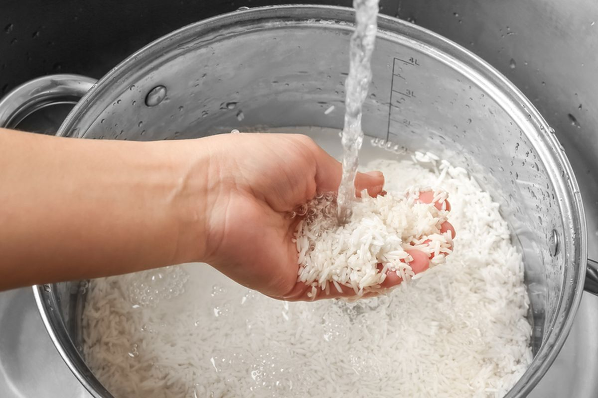
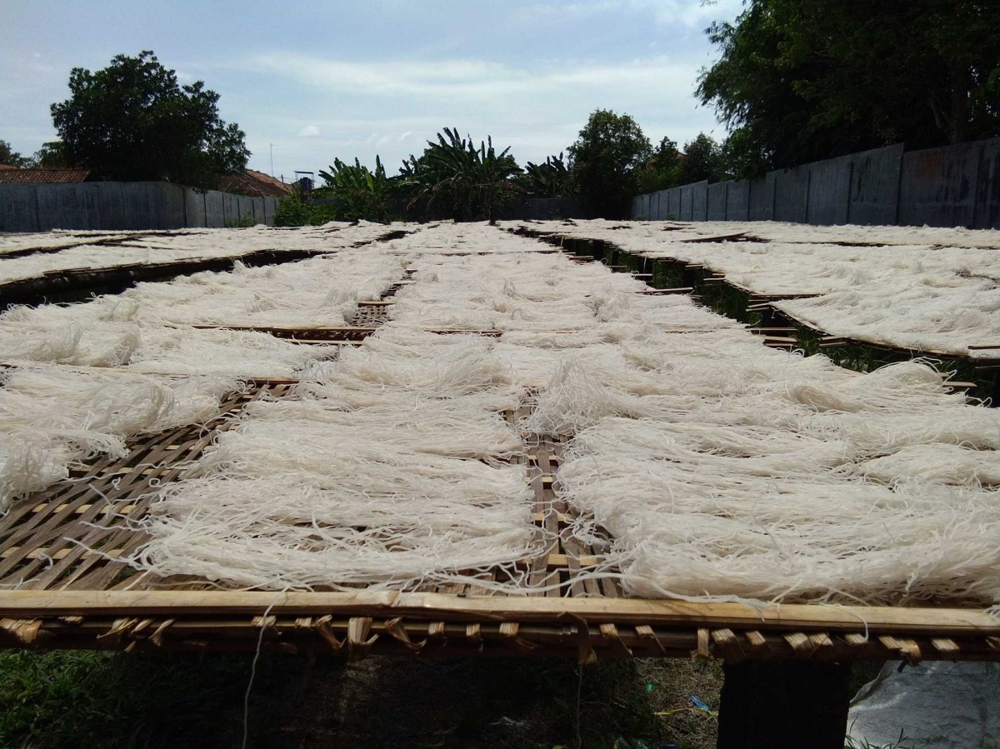
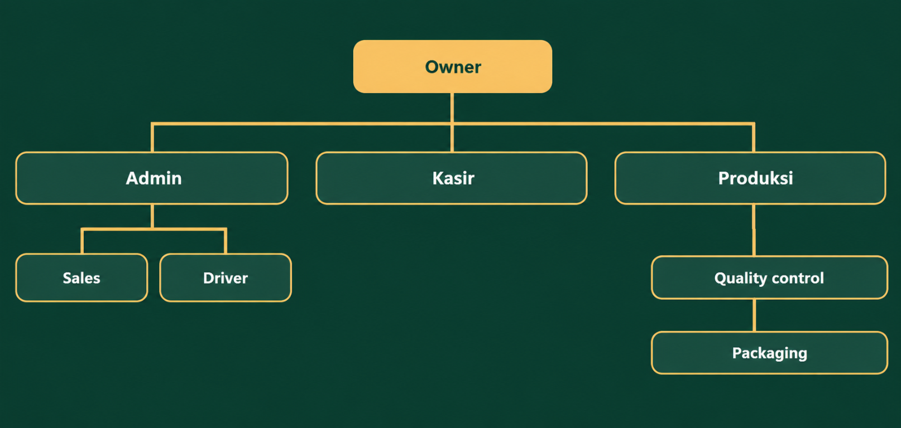
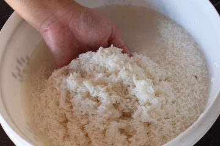
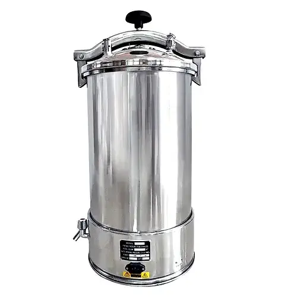
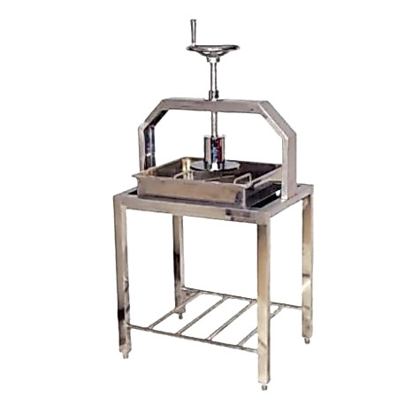
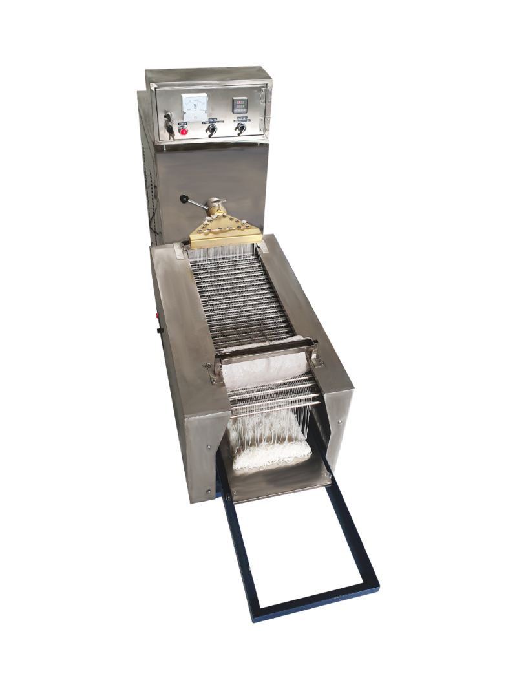
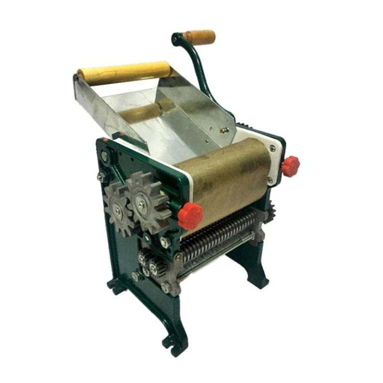
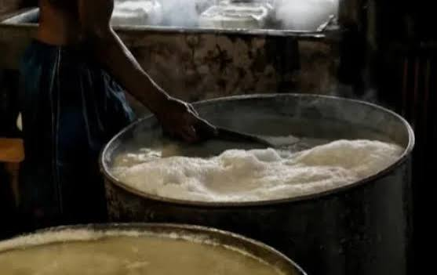

01
Pencucian beras
Beras dicuci untuk membersihkan kotoran sebelum masuk ke proses produksi.
PRODUSEN BIHUN & USAHA DAGANG · MEDAN
UD Bu Sri memproduksi bihun dan menyediakan kebutuhan sembako untuk masyarakat Medan sejak 2005. Kami menjaga kualitas dari bahan hingga produk sampai ke tangan pelanggan.

Sejak 2005CERITA KAMI
Berawal dari usaha keluarga Ibu Sri, UD Bu Sri berkembang menjadi unit usaha yang menggabungkan produksi bihun dan perdagangan sembako. Pengadaan bahan, pengolahan, pemeriksaan, pengemasan, penyimpanan, dan pelayanan pelanggan dikelola sebagai satu alur kerja yang saling terhubung.
STRUKTUR ORGANISASI
Tim UD Bu Sri bekerja sebagai satu kesatuan untuk menjaga kualitas produksi dan ketepatan pelayanan.

PROSES PRODUKSI BIHUN
Geser untuk melihat delapan tahap proses produksi bihun UD Bu Sri, dari pencucian beras hingga penjemuran.

Beras dicuci untuk membersihkan kotoran sebelum masuk ke proses produksi.

Beras yang telah dicuci direndam selama satu jam agar lebih siap untuk digiling.

Beras digiling, kemudian disaring untuk memperoleh bahan dengan tekstur yang sesuai.

Bahan hasil pengolahan dikukus pada tahap awal sebelum dipadatkan.

Bahan dipres untuk mengurangi kadar air dan membentuk adonan yang lebih padat.

Adonan dicetak untuk menghasilkan bentuk bihun yang seragam.

Hasil cetakan digiling hingga membentuk lembaran sesuai kebutuhan proses.
Bihun dijemur hingga siap ditangani dan digunakan sebagai produk akhir.
PENGELOLAAN LIMBAH
Limbah kegiatan produksi bihun ditangani secara teratur agar area kerja tetap bersih dan proses produksi berjalan nyaman. Foto ini khusus mendokumentasikan pengolahan limbah UD Bu Sri.

TEMUKAN KAMI
Jalan Pales Raya No. 54, Medan, Sumatera Utara 20212.